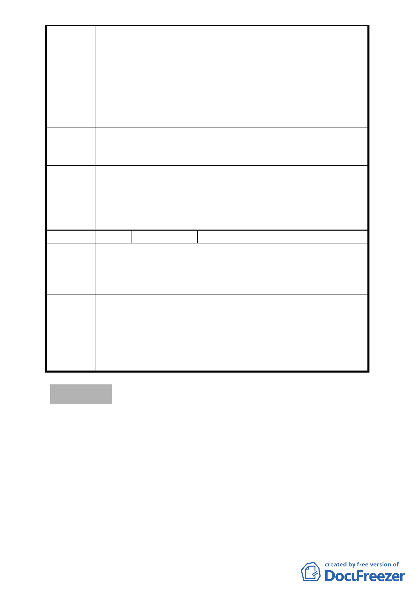

我也是 19、19-3、20、20-1、20-4 等地號的地主之一，幾
次參加說明會或旁聽貴局的會議後，對於本次細部計畫變更越
覺不妥。貴局及好好看計畫均有承諾，倘本案好好看計畫最終
未能實施的話，會將原本變更的細部計畫再還原。但貴局顯然
沒有對此動作有所配套！屆時是直接變更回來，還是要再辦理
一次公聽會，那麼是否又會有反對聲音！？萬一變不回來，那
麼該原建地被變更為道路用地的地主的權益，又有誰來保障。
如此過程實在草率，視人民權利於何物！？
總結上述理由，本人希望能將16、18地號於本次自辦更新的
建議辦法 劃定範圍中移除。另外，對於本次的細部計畫變更不表贊同，
望能維持原計畫案。
本案修正劃定更新地區範圍，應包括東側原 4 公尺寬道路用地
委員會決
議
與公園用地，以與本案變更計畫範圍一致；另為兼顧申請者與
案內更新地區土地所有權人之權益，本案將配合更新事業核定
公告細部計畫，並依「臺北好好看」開發計畫案規定時程開工，
否則仍維持原計畫不予變更。
編 號7
陳情人 方保泰
本人土地在內湖區文德段四小段 25-1 地號，有關本次變更
陳情理由
都市計畫案範圍中，將部分建築用地變更為公園用地、部分道
路用地卻成為了可建築的土地，將本人之土地做道路使用，本
人堅決反對。
建議辦法 －
本案修正劃定更新地區範圍，應包括東側原 4 公尺寬道路用地
委員會決
議
與公園用地，以與本案變更計畫範圍一致；另為兼顧申請者與
案內更新地區土地所有權人之權益，本案將配合更新事業核定
公告細部計畫，並依「臺北好好看」開發計畫案規定時程開工，
否則仍維持原計畫不予變更。
討論事項 二
案名：變更臺北市中正區中正段二小段 48 地號等 37 筆土地第 3
種住宅區及第 3-2 種住宅區為第 3 種住宅區（特）及第 3-2
種住宅區（特）暨劃定都市更新地區細部計畫案
案情概要說明：
一、計畫範圍及面積：本計畫區位於仁愛路二段、仁愛路二段 20
巷、仁愛路二段 38 巷及杭州南路一段 101 巷所圍之街廓，計
畫面積 5,442.38 平方公尺。
二、本計畫範圍目前土地使用分區為第 3 種住宅區及第 3-2 種住宅
- 16 -